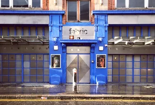
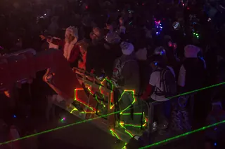
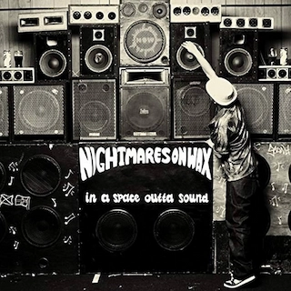

Articles
All articles.
Long guides to dance music and club culture, written for listeners.
Every article

A12Guide / London clubs / ~12 minClubs in London: The Legends and the Best Ones Open Now
The London clubs that made acid house, jungle, garage and dubstep, from Heaven to the Blue Note, and the best clubs in London open now.
Read article →Best Clubs in Berlin: The Legends and the Ones Still Open
The rooms that made Berlin a techno city, the famous clubs that closed, and the best clubs in Berlin that are still open.
Read article →
A10Guide / Burning Man / ~12 minWhat Is Burning Man? The Event, the City and the Music
A city built in the Nevada desert for a week, with no lineup and nothing for sale, and the sound camps that play anyway.
Read article →Best Boiler Room Sets of All Time, Ranked and Measured
Eighteen sets picked for what happens in them, beside the ten most-watched, counted across 8,206 Boiler Room recordings.
Read article →What Is UK Garage? The Sound, 2-Step, Speed Garage and Bassline
London played an American record too fast until the beat broke. The branches it split into, and the numbers behind its revival.
Read article →
A06Guide / Music discovery / ~10 minHow to Find New Music: 10 Ways That Are Not an Algorithm
Ten ways to hear something you have not heard before, from community radio to record credits, ordered by how much work they take.
Read article → A08Guide / Drum and bass / ~13 min
A08Guide / Drum and bass / ~13 minWhat Is Drum and Bass? History, Sound and Subgenres
The genre jungle became after the mid-1990s split: 174 BPM, chopped breaks and sub-bass, from Metalheadz to a global festival circuit.
Read article → A05Guide / Dubstep / ~15 min
A05Guide / Dubstep / ~15 minWhat Is Dubstep? Origins, Sound and the Genre Split
From south London record shops and 200-capacity basements to a genre that split into two sounds sharing one name.
Read article → A04Guide / Bass music / ~21 min
A04Guide / Bass music / ~21 minWhat Is Bass Music? History, Genres and Essential Tracks
A global history connecting Jamaica, Miami, Britain, Los Angeles, Chicago, Durban and today’s hybrid club culture.
Read article → A01Guide / Breakbeat / ~23 min
A01Guide / Breakbeat / ~23 minBreakbeat Music: History, Sound and Evolution
From funk breaks and pirate radio to cracked VSTs and modern bass hybrids.
Read article → A02Guide / Jungle / ~18 min
A02Guide / Jungle / ~18 minJungle Music: From Roots to Revival
Pirate radio, dubplates, MC energy and the global return of a distinctly Black British sound.
Read article → A03Timeline / UK music / ~27 min
A03Timeline / UK music / ~27 minThe Evolution of UK Electronic Music
Ten sounds that travelled from regional underground scenes into global culture.
Read article →